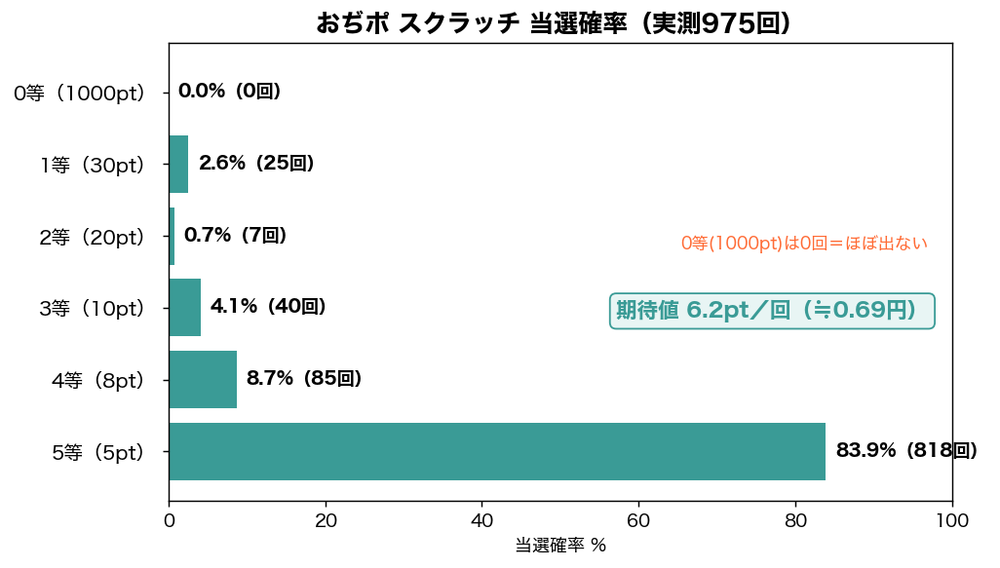
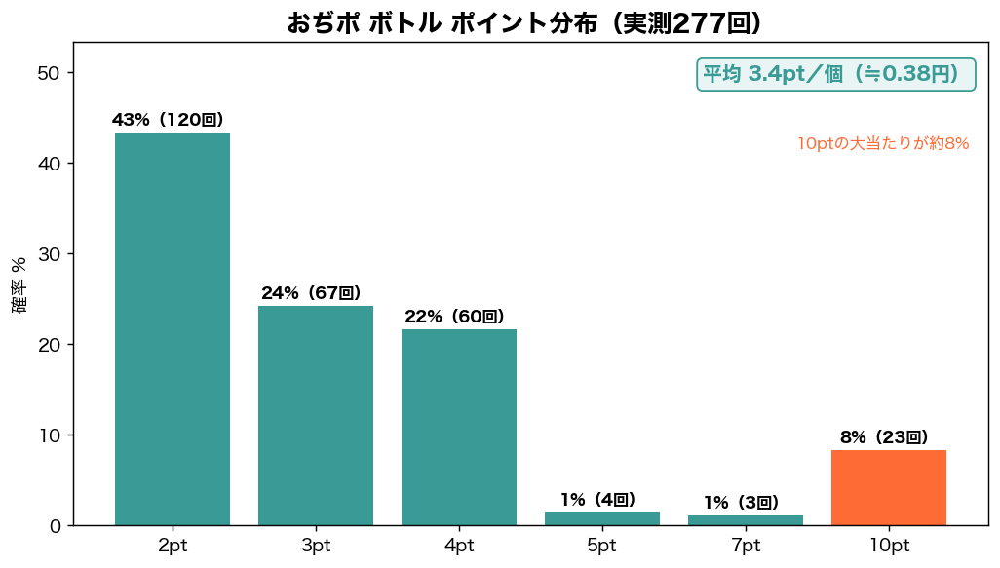

結論：おぢポは活用度しだいで月最大1,000円程度。歩数は1万歩で120ポイント貯まり、スクラッチ1回あたり約0.69円は歩数系アプリの中でも高水準です。
まず招待コードで330ポイント（約37円分）もらってから始めましょう。
この記事は、筆者がスクラッチ975回・ボトル277回を実際に引いて全記録した一次データに基づき、稼ぎ方と本当の期待値を正直に解説します。
招待コードでお得に始める（330pt）
登録時に招待コードを入力すると、330ポイント（約37円分）がもらえます。後から入力できないので、最初に必ず入れておきましょう。
使い方：① おぢポをDL → ② 新規登録 → ③「招待コード」欄に貼り付け
※利用で登録するあなたに330ポイント、筆者にもポイントが入ります。
おぢポは月いくら稼げる？【結論】
歩く習慣があり、広告再生もこなせる人なら月最大1,000円程度まで狙えます（体感）。歩数だけで1万歩＝120ポイント／日。一撃より「歩くついでに毎日コツコツ」型のアプリです。
おぢポとは？基本情報
おぢポは、株式会社ALBONAが2025年2月に配信した歩数系ポイ活アプリです。歩数・移動・ボトル・チェックイン・スクラッチ・じゃんけんなど多彩なミニ機能でポイントが貯まります。累計350万ダウンロードを突破。なお「おぢさん」の見た目が変化する演出はありますが、収益とは無関係（育成要素ではありません）。
| 項目 | 内容 |
|---|---|
| 運営 | 株式会社ALBONA |
| 配信開始 | 2025年2月 |
| DL数 | 累計350万以上 |
| 換金レート | 9ポイント＝1円（最低2,700pt＝300円分から） |
| 交換先 | デジタルギフト |
ポイントの貯め方・始め方
① 歩数（メイン）
500歩ごとに1ゲージ（＝6pt）。1万歩で20ゲージ＝120ポイント。さらに広告を見ると回収できるゲージが増え、最大5回の広告で+10ゲージ＝1日最大180ポイントまで伸びます。歩く人の主力です。
② いばしょ（グループ歩数）
グループの合計歩数2,000歩につき1回、広告再生で5ポイント獲得。1日最大15回＝最大90ポイント。一緒に歩く仲間がいるほど強力です。
③ 動画視聴
広告動画を1日最大5回・各5ポイント＝最大25ポイント。
④ 移動
移動の回収で6ポイント。
⑤ ボトル（時間経過・別機能）
歩数とは別に、2時間に1個たまる「ボトル」を回収（実測平均3.4pt）。こまめに開いて回収するのがコツ。
⑥ チェックイン（連続ログイン）
毎日ログインで7日周期のボーナス。広告を見ると約2倍になります（括弧内＝広告再生時）。1週間で最大50ポイント。
| 日数 | 1日目 | 2日目 | 3日目 | 4日目 | 5日目 | 6日目 | 7日目 |
|---|---|---|---|---|---|---|---|
| 獲得pt（広告時） | 1（2） | 2（4） | 2（4） | 6（12） | 3（6） | 3（6） | 8（16） |
⑦ スクラッチ・じゃんけん・スロット・ミッション
運試しのスクラッチ（0〜5等・実測平均6.2pt）、勝つと5ポイントのじゃんけん、スロット、アプリDL案件（イチオシ）やアンケートなどでも貯まります。
実測データ｜スクラッチ975回＆ボトル277回
スクラッチの当選確率（実測975回）

| 等級 | ポイント | 回数 | 確率 |
|---|---|---|---|
| 0等 | 1,000 | 0回 | 0.00% |
| 1等 | 30 | 25回 | 2.56% |
| 2等 | 20 | 7回 | 0.72% |
| 3等 | 10 | 40回 | 4.10% |
| 4等 | 8 | 85回 | 8.72% |
| 5等 | 5 | 818回 | 83.90% |
| 合計／平均 | — | 975回 | 1回6.2pt |
ボトルの実測（277回）

| ポイント | 回数 | 確率 |
|---|---|---|
| 2pt | 120回 | 43.32% |
| 3pt | 67回 | 24.19% |
| 4pt | 60回 | 21.66% |
| 10pt（大当たり） | 23回 | 8.30% |
| 合計／平均 | 277回 | 1個3.4pt |
最多は2ポイント（約43%）ですが、10ポイントの大当たりが8.3%あり、地味に侮れません。
月収シミュレーション（5,000歩／1万歩）
実測値をもとに、歩数2パターンで試算しました（広告再生あり）。
| 機能 | 5,000歩プラン | 1万歩プラン |
|---|---|---|
| 歩数（広告ブースト込） | 約90pt | 約180pt |
| ボトル（時間経過・約12個） | 約41pt | 約41pt |
| いばしょ | 約45pt | 約90pt |
| 動画視聴（5回） | 25pt | 25pt |
| チェックイン・じゃんけん・移動 | 約18pt | 約18pt |
| 1日合計 | 約219pt（約24円） | 約354pt（約39円） |
| 月間（30日） | 約6,570pt＝約730円 | 約10,620pt＝約1,180円 |
【極めるなら】理論上いくら？広告再生単価の本音
「全機能をフルでやったら、おぢポ単体でいくらが天井なのか」を、実測値から計算しました。さらに広告1再生あたり何円稼げるか（＝¥/再生）で、各機能を率直に評価します。広告を見る体力は有限なので、ここが効率の分かれ目です。
このアプリ単体の理論最大（1日）
| 機能 | 1日の最大pt |
|---|---|
| 歩数（広告ブースト5回） | 180pt |
| いばしょ（15回） | 90pt |
| ボトル（約12個） | 約41pt |
| 動画視聴（5回） | 25pt |
| スクラッチ（理論） | 約18pt |
| チェックイン（広告・平均） | 約7pt |
| じゃんけん＋移動 | 約11pt |
| 合計 | 約372pt/日 → 月約11,000pt＝約1,200円 |
広告再生単価ランキング（¥/再生）｜やるべき・微妙の本音
1再生で稼げる金額が高いものから、優先して広告を見るのが正解です。
| 機能 | 1再生あたり | 率直な評価 |
|---|---|---|
| じゃんけん（広告不要） | 5pt／実質無料 | ◎ まずこれ。タダで5pt |
| 歩数ブースト | 約12pt＝¥1.33 | ◎ 最優先。圧倒的に高単価 |
| いばしょ | 6pt＝¥0.67 | ○ 歩く仲間がいればおいしい |
| 動画視聴（単体） | 5pt＝¥0.56 | ○ 1日5回だけなので消化推奨 |
| チェックイン広告 | 約3.6pt＝¥0.40 | △ 単価は低いが1日1回で軽いのでアリ |
※¥換算は9pt＝1円で計算。仕様変更で数値は前後します。
メリット・デメリット
メリット
- 歩数1万歩で120pt＋多彩なミニ機能でコツコツ貯まる
- スクラッチ1回0.69円は歩数系の中では高水準（実測）
- 活用すれば月最大1,000円程度まで狙える
- 累計350万DLの人気アプリ
デメリット
- 換金レートが9pt＝1円とやや低め
- 交換先がデジタルギフト中心（現金化はしづらい）
- 0等(1,000pt)は実測975回でゼロ＝ほぼ出ない
- 効率化には広告視聴が前提になりがち
- おぢさんは見た目が変わるだけで収益には影響しない（育成要素ではない）
よくある質問
Q. おぢポは稼げる？
活用度しだいで月最大1,000円程度（体感）。歩数1万歩で120pt、スクラッチ1回0.69円は歩数系では高水準です。
Q. 招待コードは？
登録時にコードを入力で330ポイント（約37円分）。被招待者は必ずもらえます。
Q. スクラッチの0等(1000pt)は当たる？
実測975回で0回。最高ランクは超低確率で、現実的な期待値は1回6.2ポイントです。
Q. 換金レートは？
9ポイント＝1円。最低2,700ポイント（300円分）からデジタルギフトに交換できます。
まとめ・次の一歩
おぢポは「歩くついでにミニゲームでコツコツ」型の歩数系ポイ活。換金レートはやや低めですが、歩数120pt/日とスクラッチの効率は歩数系トップクラス。一撃は狙えませんが、しっかり活用すれば月最大1,000円程度まで積み上がります。
始めるなら、まず招待コードで330ポイントを受け取ってから。
2. 登録時に招待コードを入力して330pt（上の枠からコピー）
3. 広告再生・ボトル・スクラッチを毎日の習慣に
他の歩数系と比べるなら LINE WALK・トリマ の検証記事もどうぞ。